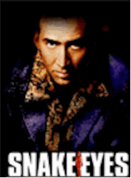
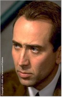
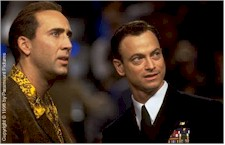

Contents | Features | Reviews | Books | Archives | Store |
 |
|
| Movie Credits | Buy It! |
Snake Eyes
Review by Eddie Cockrell
Posted 7 August 1998
|  | Produced and Directed by Brian De Palma Starring
Nicolas Cage, Gary Sinise, John Heard, Written by Brian De Palma and David Koepp |
The political and media-related dimensions of the verb "spin" hadn't yet been coined into popular culture when Brian De Palma first began making his technically astonishing but distant, barren and emotionally overwrought style of action thrillers nearly three decades ago (among his dozens of credits are Carrie, Dressed to Kill, The Untouchables and Raising Cain, as well as the very public disaster The Bonfire of the Vanities and the relatively more subdued -- and infinitely more successful -- Mission: Impossible). Yet the word is used twice by two different characters in the first half hour of his newest film, suggesting the director envisions a fresh, uh, spin on his ongoing concerns of duplicitness, paranoia, conspiracy and the elaborate illusions employed by emotionally and morally flawed people to further those nefarious goals. Unfortunately, Snake Eyes is, in the end, just the latest in a long line of De Palma teases, a glossy, supercharged, sumptuous but ultimately empty exercise in virtuoso technical skill that is at once gorgeous to look at and a real challenge to sit through (a significant irony, since at under 100 minutes it is one of the summer's more conspicuous examples of brevity).
As a tropical storm -- soon to be upgraded to Hurricane Jezebel -- scours the Atlantic City boardwalk, preparations are underway for a prizefight in the jam-packed Millenium casino and hotel (the interiors were filmed in Montreal's old Forum, the few outdoor scenes on location in and around Atlantic City and on an elaborate set built on the parking lot of a local high school). On hand is local police detective Rick Santoro (Nicolas Cage), a corrupt, politically ambitious wiseass, and his best friend, Navy Commander Kevin Dunne (Gary Sinise), an intense Department of Defense staffer who has just pulled bodyguard duty for DoD secretary Charles Kirkland (Joel Fabiani), who is second row center courtesy of magnate Gilbert Powell (John Heard).
The fight is barely a round old when someone shoots the secretary and pandemonium breaks out among the 14,000 fans in the arena. Drawing on an implausible moral reserve that surprises no one more than himself, Santoro takes control of the situation and tries to spin the event and sort out the suspects: who is the elusive, mysterious blond (Carla Gugino) who appeared from nowhere and was so close to the secretary that she was wounded in the shooting? Why did Dunn desert his post to question the alluring redhead (Jayne Heitmeyer) in the adjacent row? Why did popular heavyweight fighter Lincoln Tyler (Stan Shaw) go down so quickly? How does Powell figure in the tragedy? And what of ambitious television correspondent Lou Logan (Kevin Dunn)?
The answers to all of these questions are fairly preposterous, but shouldn't impede enjoyment of this third screenplay collaboration between De Palma and Jurassic Park scribe David Koepp (their first original story following Mission: Impossible and Carlito's Way). Snake Eyes is nothing if not ambitious, opening with a lengthy, bravura Steadicam shot through the hall and point-of-view sequences in which principal characters narrate their own version of the events surrounding the assassination (shades of Akira Kurosawa's 1951 must-see masterpiece Rashomon). And for a while it looks as if the movie has achieved a seductive rhythm, coddled by Ryuichi (The Last Emperor) Sakamoto's lush score, that promises tangible pleasures. But once Santoro turns from cretin to crusader and the fourth or fifth plot twist has been revealed, the movie loses not only steam but common sense, lurching to an abrupt halt via a wildly improbable and virtually indecipherable denouement.
The film isn't completely devoid of sly wit along the way: in a movie obsessed -- as are all De Palma films -- with the process of seeing, Gugino's character is functionally blind after losing her glasses in the opening melee, while his trademark splitscreen sequences (multiple images of the same action sharing the frame) are not-so-subtle reminders of the exquisite timing necessary to make a movie of this kind. Once again De Palma uses elevators and hotel corridors to mischievously ratchet up suspense, while an overhead pan of adjoining hotel rooms reminds alert moviegoers that among contemporary filmmakers perhaps only Martin Scorsese's movies have as distinctive a personal stamp (De Palma has always been held in high esteem among the group of filmmakers that came to prominence in the 1970s).
Cage is back in the kind of wild-eyed maniac role he left briefly to cement his serious dramatic chops (the Oscar-winning turn in Leaving Las Vegas, the Wings of Desire remake City of Angels), a part physically embodied by the shiny rayon and silk number he sports over a hideous Hawaiian shirt in the first third of the film ("That's it. That's my character. I want to wear that suit," he says; "It's very loud," said Costume Designer Odette Gadoury diplomatically). Gugino, who played Michael J. Fox's former love interest in "Spin City" for awhile, is fine in an underwritten role that calls for her to spend the first part of the film looking uncomfortably like the mystery woman in De Palma's 1980 thriller Dressed to Kill and most of the remainder locked in a remote storeroom and stuck with that myopia gag.
Even though his character motivations become increasingly absurd, Sinise is growing into these kinds of roles (think Ransom). With his raspy voice and feral squint, he's the sole presence of substance in the film (actors must love to play heavies in De Palma movies: think the young John Lithgow in his 1981 political thriller Blow Out -- one of John Travolta's great unacknowledged performances and the movie in the De Palma canon this most resembles). No one else has a chance to elevate their characters beyond a single dimension, although Shaw (Daylight, Truck Turner), and to a lesser extent, Heard (Home Alone, Between the Lines) and Dunn (who, oddly, shares his name with Sinise's character), have scenes -- or at least moments -- where they're allowed a little breathing room. Ironically, only the great character actor Luis Guzmán (Out of Sight, Boogie Nights) -- who also worked with De Palma on Carlito's Way -- delivers the kind of low-life veracity the movie's after, and that in a role that is perhaps the most gratuitous in the entire film.
Frustrating, exasperating and ultimately unsatisfying, Snake Eyes demands to be seen in the best theater available, on the largest screen possible (director of photography Stephen H. Burum has shot nine films for De Palma, including the upcoming Ambrose Chapel and Nazi Gold, while veteran Steadicam operator Larry McConkey engineered the intricate camera movements). Moviegoers in search of some kind of payoff are advised to stay through the entire closing credits, as the visual punchline delivered just before the lights come up crystallize the ongoing dilemma of Brian De Palma: it's funny, it must have been extremely hard to do (hint: as in the rest of the film, what's going on in the background is often more interesting and important than foreground action), and it is ultimately a frivolous exercise. Sadly, no amount of spin can disguise or explain the disparity between the shallow drama and tremendous visuals of Snake Eyes.
Contents | Features | Reviews | Books | Archives | Store
Copyright © 1999 by Nitrate Productions, Inc. All Rights Reserved.